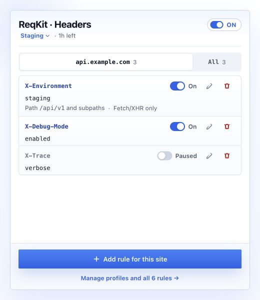
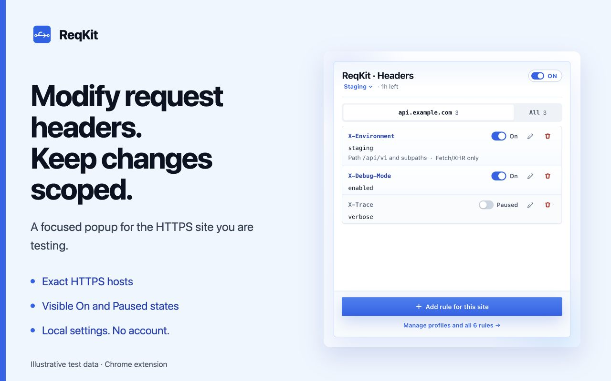
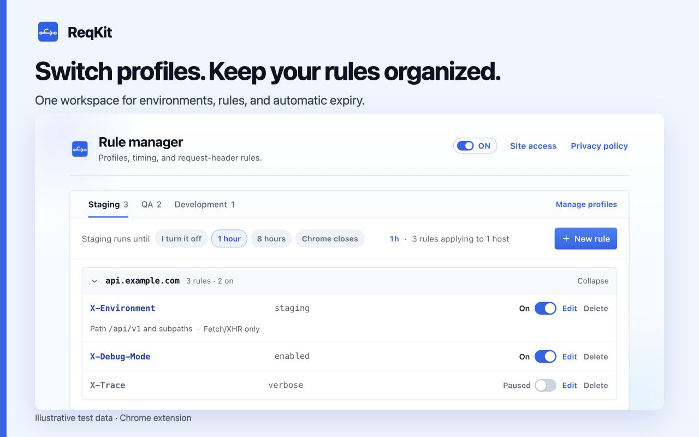
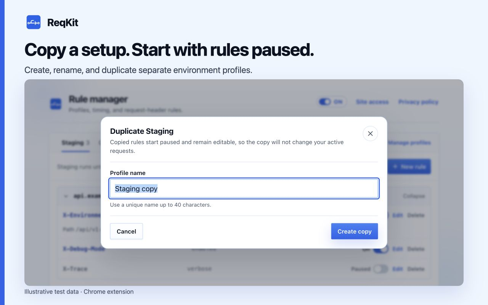

Exact-host headers
Create, pause, edit, and remove request headers only for HTTPS hosts where you grant ReqKit site access through Chrome.
Test APIs in Chrome with exact-host header rules, environment profiles, and automatic expiry. Narrow rules to an API path or fetch/XHR calls, with settings stored in your Chrome profile.
Built for API and web-environment testing
Exact-host rules and environment profiles keep every change scoped, visible, and reversible.
Create, pause, edit, and remove request headers only for HTTPS hosts where you grant ReqKit site access through Chrome.
Keep staging, QA, and other rule sets separate, then select the one environment that should apply.
Apply a profile for one hour, eight hours, the browser session, or until you explicitly turn it off.
Settings stay in the current Chrome profile. ReqKit has no analytics, remote code, account system, or developer server.
Create, pause, edit, and remove request headers for an exact HTTPS hostname, optionally limited to API paths or fetch/XHR requests.

Review rules by profile and hostname, switch how long a profile runs, and see exactly what is active before continuing your test.

Create, rename, duplicate, or delete profiles in a dedicated view while the active setup remains visible behind it.

The popup identifies the current hostname and shows the rules that affect it.
Select a profile and activation lifetime in the rule manager, then turn on only the rules you need.
Chrome applies rules marked On to matching exact-host requests and stops them automatically when configured.
ReqKit's source, permissions, storage behavior, and complete privacy policy are public. Header values may still be logged by destinations or intermediaries, so use only authorized systems and test data.
Install in Chrome 120 or later. No account is needed. ReqKit asks for site access when you create or resume a rule for an HTTPS host.
Clone the GitHub repository, open chrome://extensions, enable Developer mode, choose Load unpacked, and select the extension directory.
Practical guides with example headers, matching rules, and checks you can repeat.
Create your first rule, narrow its scope, and verify it in DevTools.
Keep environment settings separate and understand which rules apply.
Choose a timer, pause everything, and resume a saved setup.
ReqKit manages request headers for exact HTTPS hosts. It does not edit response headers, inspect response bodies, or bypass CORS.
ReqKit requests site access on demand for the exact host a rule needs. Chrome also lets you manage extension access; review any exact or broader grants in the rule manager's Site access overview.
In the current Chrome profile, without a ReqKit account, analytics, or developer server. Enabled header values reach matching destinations and may appear in their logs. Read the privacy policy for details.